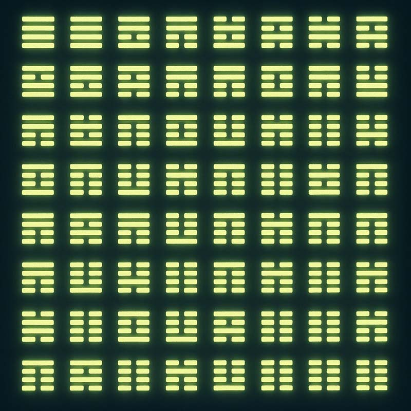

==============================
::FUCKUP² ORACLE STATION::
Subchannel: Depth Rituals
==============================

FUCKUP Divination Archive
Divination for 2025 05 07 144736 — Hexagram 46
Divination for 2025 05 06 180417 — Hexagram 58
Divination for 2025 05 06 132141 — Hexagram 51
Divination for 2025 05 06 081424 — Hexagram 34
Divination for 2025 05 06 021258 — Hexagram 55
Divination for 2025 05 06 014827 — Hexagram 9
Divination for 2025 05 06 012949 — Hexagram 13
Divination for 2025 05 05 160341 — Hexagram 61
Divination for 2025 05 04 232539 — Hexagram 42
Divination for 2025 05 04 215302 — Hexagram 37
Divination for 2025 05 04 113823 — Hexagram 25
Divination for 2025 05 04 101504 — Hexagram 6
Divination for 2025 05 04 013626 — Hexagram 61
Divination for 2025 05 04 005701 — Hexagram 19
Divination for 2025 05 04 004528 — Hexagram 1
Divination for 2025 05 03 185437 — Hexagram 22
Divination for 2025 05 03 172905 — Hexagram 54
Divination for 2025 05 03 152405 — Hexagram 30
2025-05-03-Hexagram-52-Keeping-Still-(Mountain)-䷳.html
2025-05-02-Hexagram-18-Work-on-What-Has-Been-Spoiled-䷑.html
2025-05-01-Hexagram-30-The-Clinging-(Fire)-䷝.html
2025-05-01-Hexagram-17-Following-䷐.html
2025-05-01-Hexagram-11-Peace-䷊.html
2025-04-30-Hexagram-42-Increase-䷩.html
2025-04-30-Hexagram-37-The-Family-䷤.html
2025-04-30-Hexagram-36-Darkening-of-the-Light-䷣.html
2025-04-30-Hexagram-28-Preponderance-of-the-Great-䷛.html
2025-04-30-Hexagram-17-Following-䷐.html
2025-04-30-Hexagram-16-Enthusiasm-䷏.html
2025-04-29-Hexagram-59-Dispersion-(Dissolution)-䷺.html
2025-04-29-Hexagram-33-Retreat-䷠.html
2025-04-29-Hexagram-28-Preponderance-of-the-Great-䷛.html
2025-04-29-Hexagram-25-Innocence-(The-Unexpected)-䷘.html
2025-04-29-Hexagram-17-Following-䷐.html
2025-04-29-Hexagram-10-Treading-(Conduct)-䷉.html
2025-04-28-Hexagram-8-Holding-Together-(Union)-䷇.html
2025-04-28-Hexagram-64-Before-Completion-䷿.html
2025-04-28-Hexagram-61-Inner-Truth-䷼.html
2025-04-28-Hexagram-6-Conflict-䷅.html
2025-04-28-Hexagram-51-The-Arousing-(Shock)-䷲.html
2025-04-28-Hexagram-48-The-Well-䷯.html
2025-04-28-Hexagram-4-Youthful-Folly-䷃.html
2025-04-28-Hexagram-36-Darkening-of-the-Light-䷣.html
2025-04-28-Hexagram-33-Retreat-䷠.html
2025-04-28-Hexagram-25-Innocence-(The-Unexpected)-䷘.html
2025-04-28-Hexagram-13-Fellowship-䷌.html
2025-04-28-Hexagram-11-Peace-䷊.html
2025-04-27-Hexagram-Hexagram.html
2025-04-24-Hexagram-7-The-Army-䷆.html
2025-04-24-Hexagram-63-After-Completion-䷾.html
2025-04-24-Hexagram-52-Keeping-Still-(Mountain)-䷳.html
2025-04-24-Hexagram-5-Waiting-(Nourishment)-䷄.html
2025-04-24-Hexagram-47-Oppression-(Exhaustion)-䷮.html
2025-04-24-Hexagram-38-Opposition-䷥.html
2025-04-24-Hexagram-28-Preponderance-of-the-Great-䷛.html
2025-04-24-Hexagram-27-Nourishment-䷚.html
2025-04-24-Hexagram-26-Taming-the-Power-of-the-Great-䷙.html
2025-04-24-Hexagram-16-Enthusiasm-䷏.html
2025-04-23-Hexagram-31-Influence-(Wooing)-䷞.html
2025-04-23-Hexagram-22-Grace-䷕.html
2025-04-22-Hexagram-62-Preponderance-of-the-Small-䷽.html
2025-04-22-Hexagram-50-The-Cauldron-䷱.html
2025-04-22-Hexagram-49-Revolution-(Molting)-䷰-⚊⚊.html
2025-04-22-Hexagram-41-Decrease-䷨.html
2025-04-22-Hexagram-39-Obstruction-䷦.html
2025-04-22-Hexagram-39-Obstruction-䷦-⚊⚊.html
2025-04-22-Hexagram-35-Progress-䷢.html
2025-04-22-Hexagram-28-Preponderance-of-the-Great-䷛.html
2025-04-22-Hexagram-22-Grace-䷕.html
2025-04-22-Hexagram-20-Contemplation-(View)-䷓.html